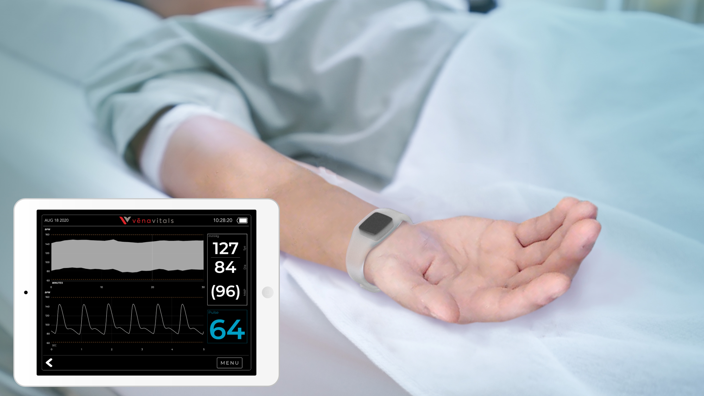

VeriTrack System
Continuous. Noninvasive. Blood Pressure.
Beat-to-beat arterial pressure from a soft sensor the size of a band-aid. No cuff, no arterial line.

VeriTrack System
Beat-to-beat arterial pressure from a soft sensor the size of a band-aid. No cuff, no arterial line.
The Problem
The standard cuff reads every 3 to 5 minutes. Between readings, a patient can lose significant blood volume or undergo a dangerous pressure drop that goes undetected until the next cycle. The alternative, arterial line cannulation, provides continuous, beat-to-beat data, but carries a 10 to 13% complication rate, a 0.6% infection risk, and a 5 to 20 minute placement time that delays the start of surgery. For cases where continuous pressure matters and an arterial line is not placed, clinicians are left choosing between incomplete data and invasive access.
Between cuff readings
Arterial line complication rate
A-line infection risk
"It's very binary... there's nothing really in between."
The Solution
VeriTrack is a soft, wearable sensor that adheres to the foot and measures blood pressure with every heartbeat. No cuff cycles, no needle. It delivers the continuous hemodynamic visibility of an arterial line without the procedural risk, placement delay, or invasive cannulation.
Every heartbeat, not every few minutes. Continuous BP trends without the lag of cuff inflation cycles, so pressure drops are visible as they happen, not after the next reading.
No cannulation, no infection risk. Applied like a bandage and removed cleanly after the case. No arterial access, no line-care burden, no procedural delay.
Soft sensor, foot placement. Applied over the dorsalis pedis artery and kept entirely out of the surgical field. No occupied arm, no cuff interference, no tethered catheter.
VeriTrack has been submitted for FDA 510(k) review and is not yet available for commercial sale.


Clinical Validation
In side-by-side operating room comparisons against the radial arterial line, VeriTrack tracked rapid blood pressure changes beat for beat, across a wide range of patients, surgical cases, and hemodynamic events. Sudden fluid shifts and hypotensive dips that happen between cuff readings, where they stay invisible, are captured continuously.
Subjects tested
Study sites
Patient age range
BP range (mmHg)
"A thin bandage-like patch for monitoring blood pressure continuously could revolutionize not just in-hospital monitoring, but outpatient monitoring as well; this is an exciting concept!"
VeriTrack has been submitted for FDA 510(k) review. It is not yet available for commercial sale.